Business directory
2,603 saved Pittsburgh business candidates, with filters and separate website/contact status.
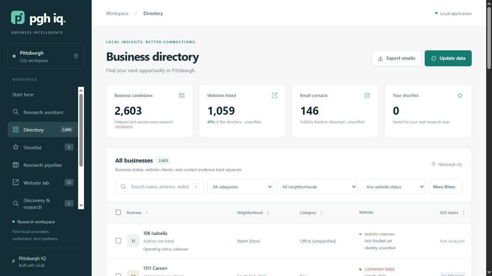
1265 × 712 · Download image
Actual app captures · October 15, 2026. Recommended slide order: directory → research controls → sourced result → profile → website lab → data coverage.
Click any image for its original size. Local AI is disabled in this captured launch; no generated answer is shown.
2,603 saved Pittsburgh business candidates, with filters and separate website/contact status.

1265 × 712 · Download image
Find, check and save: a guided starting point for new users.
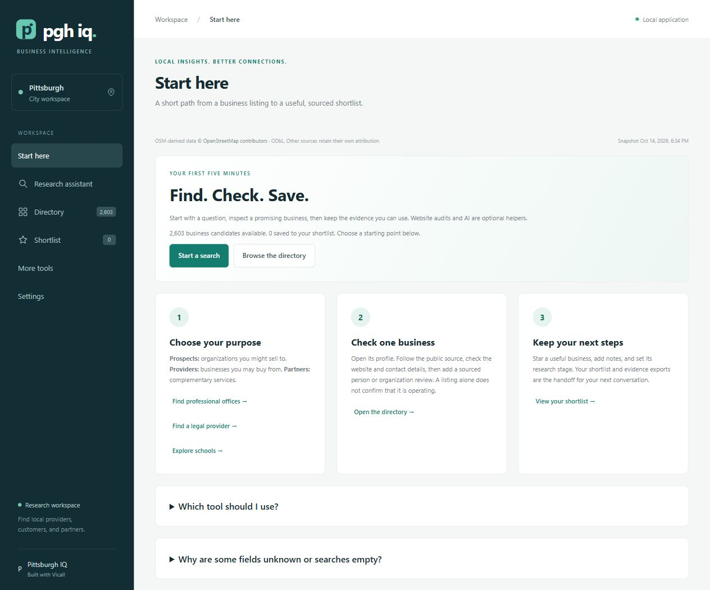
1264 × 1050 · Download image
Purpose, sector and evidence requirements support provider, prospect and partner searches.
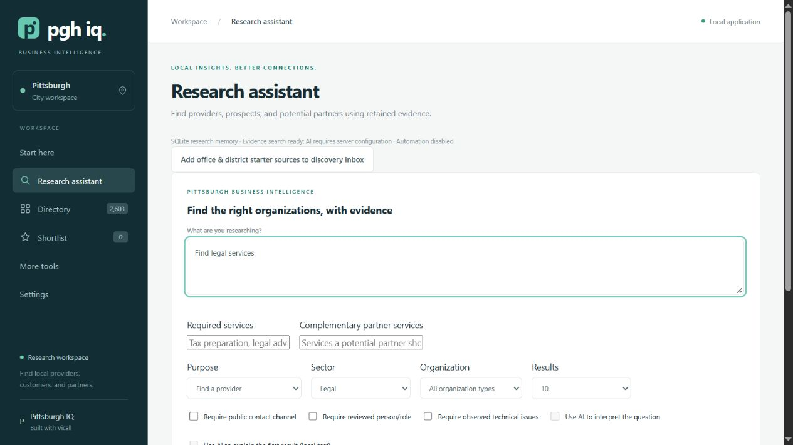
1265 × 712 · Download image
A legal-provider search returns 22 matches using saved evidence, with dated source links and an explained heuristic score.
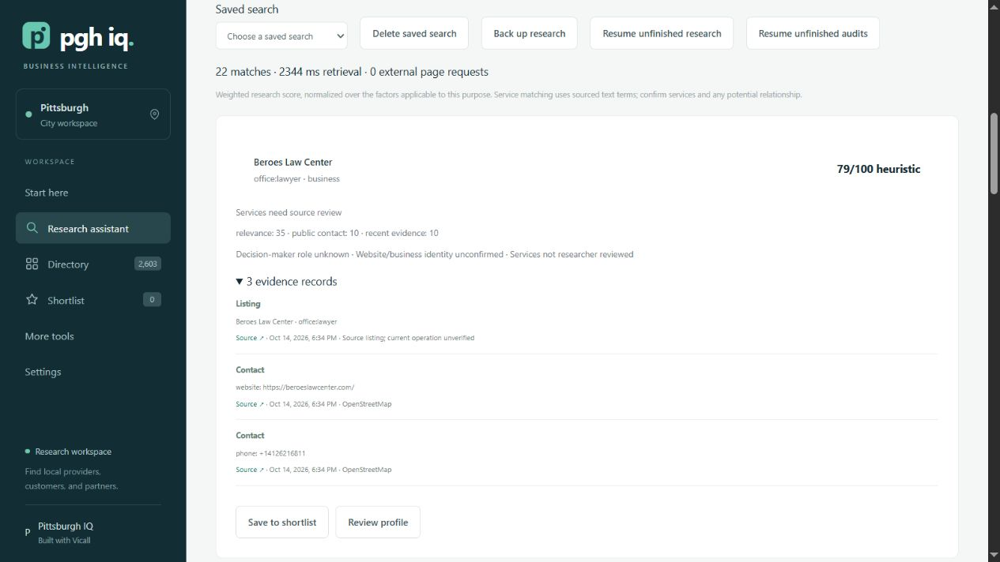
1265 × 712 · Download image
A single view separates public contact information, operating status, website identity and unknowns.
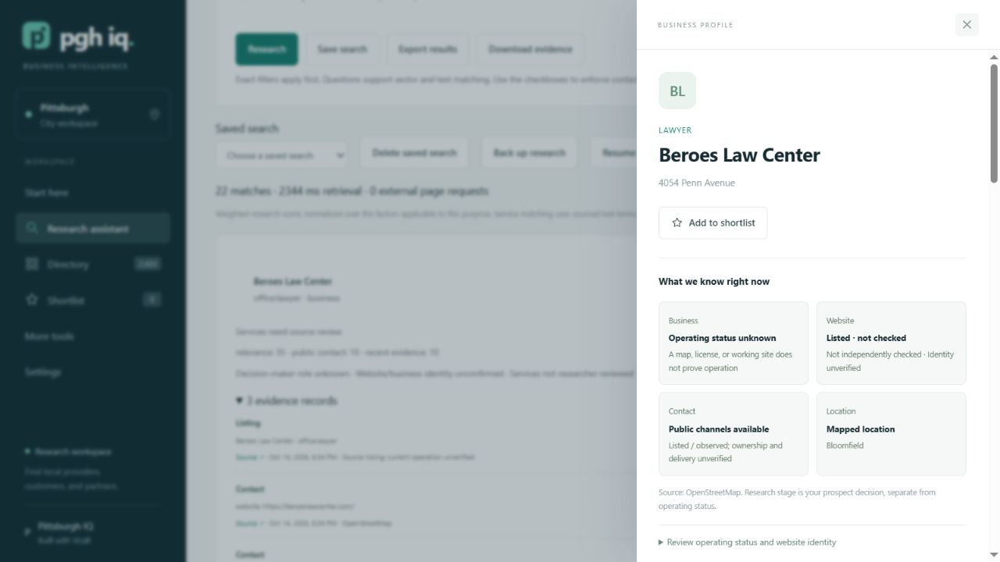
1280 × 720 · Download image
The saved OSM snapshot reports website, phone, email and address availability, plus possible duplicate flags.
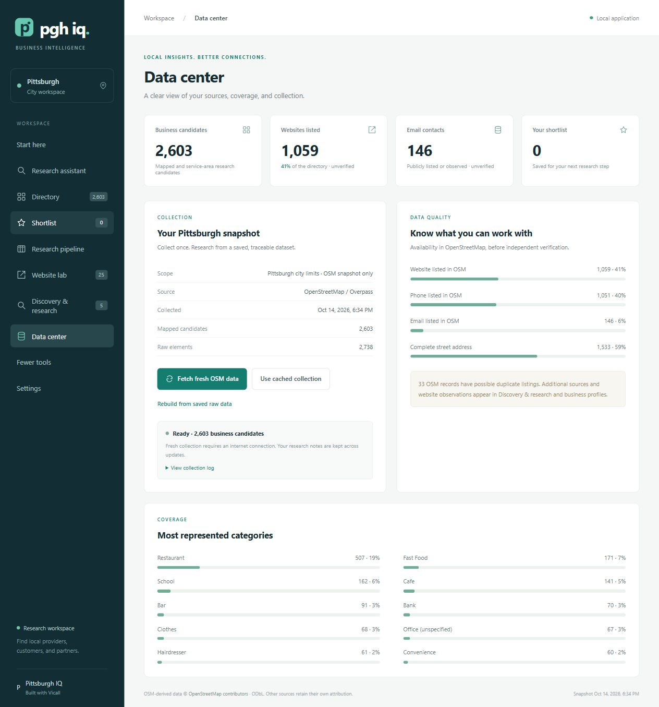
1264 × 1355 · Download image
25 saved website checks distinguish reachable pages from failed or inconclusive observations.
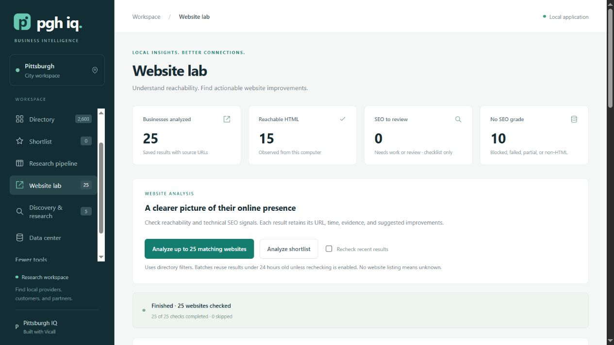
1265 × 712 · Download image
A dated static HTML checklist preserves the sampled URL, response and suggested improvements. This is not a Google ranking or Lighthouse score.
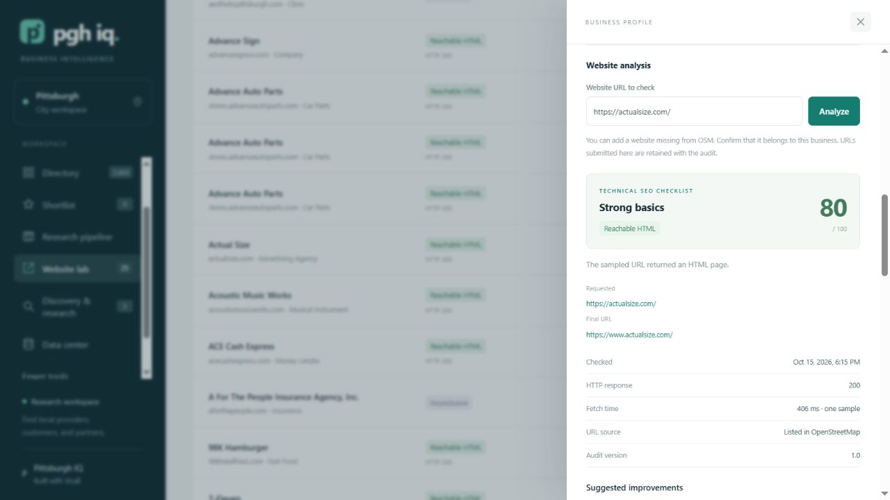
1280 × 720 · Download image
Workspace preferences, AI mode, connections, ranking and background research controls. Local AI is unavailable in this captured launch.
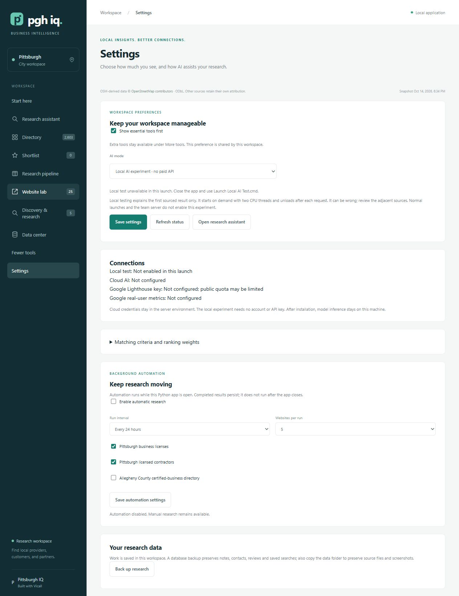
1264 × 1638 · Download image
Editable weights explain how different research priorities contribute to a heuristic score.
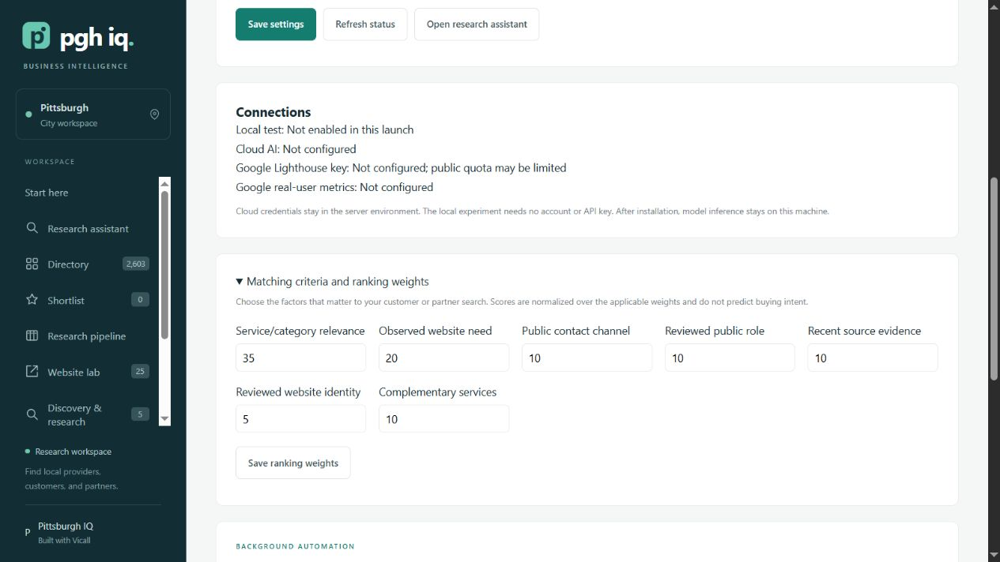
1265 × 712 · Download image
Public-source office and school-district leads await review before entering the directory.
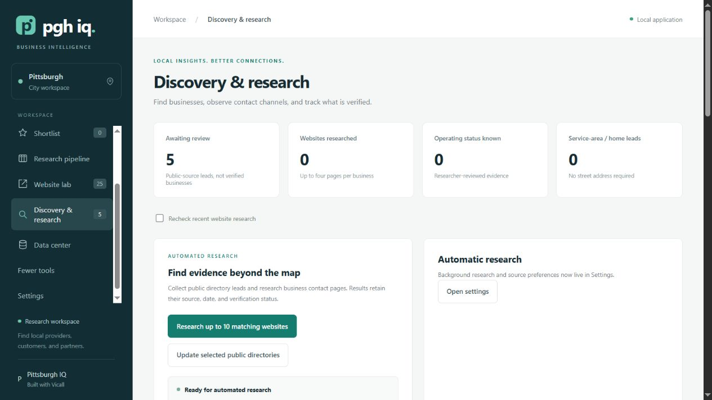
1265 × 712 · Download image